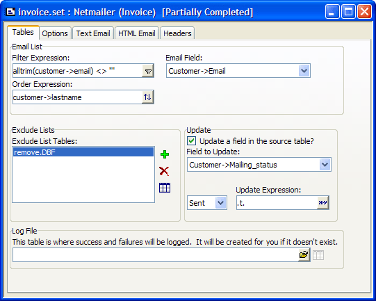
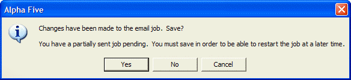
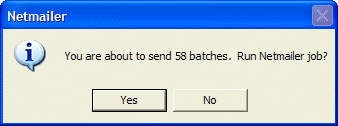
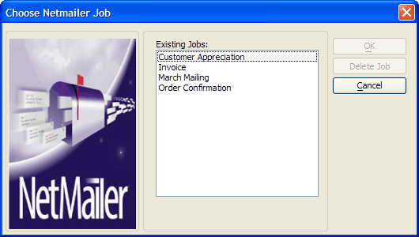
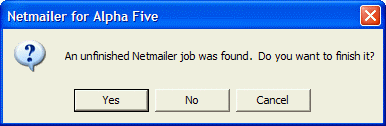
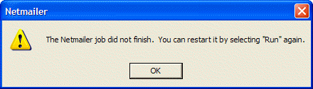

Creating a Netmailer Professional Maintenance Job
Netmailer Professional helps you to accomplish the following emailing tasks:
Process subscribe requests
Process remove requests
Validate email addresses
Identify undeliverable email addresses
Netmailer can monitor a designated email box for subscribe and remove requests, and process the requests as you specify. In addition, Netmailer can validate and check email addresses for incorrect syntax, remove them from the mailing list, and optionally, add them to a list of invalid email addresses.
Creating a new Maintenance Job
The partially completed job appears in the Netmailer Editor.

Next to the mailing job name, Netmailer displays Partially Completed in the title bar, indicating that this job has been partially sent, but there are additional messages to send before its completion.
The asterisk (*) in the title bar indicates that changes have been made which require you to save the job. If you click the close button in the Editor window, the following message appears:

A Netmailer Progress window appears displaying the mailing job status.

A confirmation message appears.

The job appears in the Netmailer Editor. The Netmailer Job selection window appears.

Netmailer completes the mailing job. If you click No, Netmailer restarts and runs the job from the beginning.
Stopping and Resuming
To stop and resume a job, using the Netmailer Editor:
The following message window appears.

To resume a mailing job:
The following message window appears.

A Netmailer Progress window appears displaying the mailing job status.
See Also
Supported By
Alpha Five Version 5 and Above (Requires a Netmailer License)